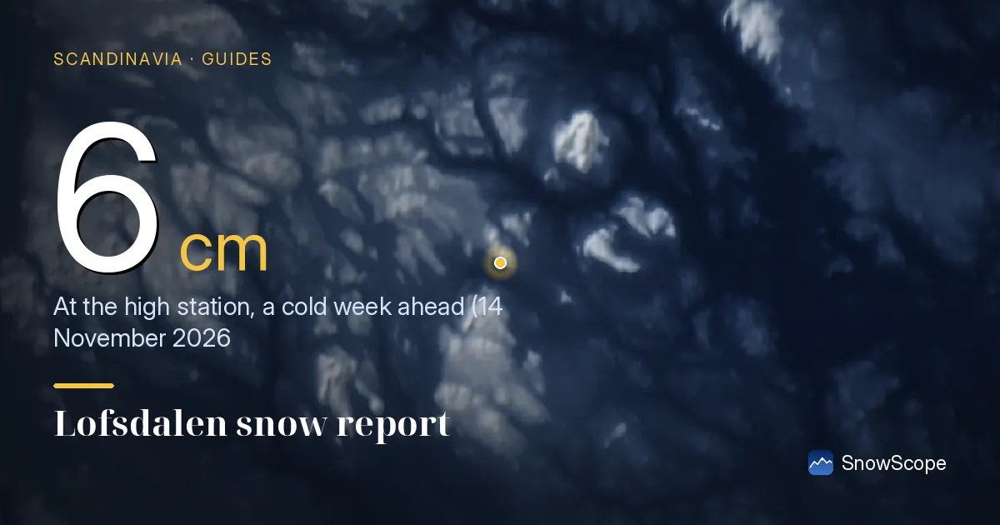

Lofsdalen snow report: 6 cm at the high station, a cold week ahead (14 November 2026)
Lofsdalen, in Härjedalen between Vemdalen and Sälen, has a thin but real start to the winter. The nearest weather station, Häggberget, 15 km away at 682 m, measured 6 cm on the morning of 12 November; its reading for the 13th was not yet in. Further away, Hedeviken at 420 m measured 8 cm and Särna at 425 m 7 cm on 13 November. The resort is closed and reopens on 11 December.
See the live snow forecast for Lofsdalen in the SnowScope appSnow depth, powder alerts and the 3D map, free.

A cover that should stay
The stations around Lofsdalen were bare until 10 November and then picked up a few centimetres a day. Our estimate of new snow over the last seven days is about 9 cm at the resort.
The difference from Dalarna further south is the temperature: Lofsdalen is higher and further from the mild air, so what has fallen is not under threat this week.

The next seven days
We expect about 7 cm at every height of the resort, from 629 to 1106 m. Other forecasts range from 10 to 19 cm. Almost none of the water falls as rain, and the snow line stays around 320 to 330 m, far below the valley. So the cover should grow slowly.
Usual depth for the season
Our 46 past winters give Lofsdalen a usual depth of 12 cm on 14 November, 24 cm on 30 November and 32 cm on 15 December. Today's 6 to 8 cm around the valley is a little below that, but within the normal range: one winter in ten has no snow at all on 14 November.
A middle winter here peaks at about 80 cm, and the ground stays white for about 198 days. The best weeks are usually in March.
When it opens
The resort's homepage says it is closed for the season and opens again on 11 December. It does not print the year next to the date; it refers to the 2026/27 winter.
Tips for skiers
- Before the lifts open, the forest roads and the trails around the lake are the best way to enjoy the first snow.
- Nights are long and cold here in November; even a short walk needs a headlamp after mid-afternoon.
- For the opening, follow the resort's webcams and news rather than the valley stations.
More maps (external sites)
References and credits
- SMHI, open data: daily snow depth at Swedish weather stations www.smhi.se/data/meteorologi/ladda-ner-meteorologiska-observationer
- Lofsdalen, official site: opening dates and lift status, read 2026-11-13 www.lofsdalen.com/
About these numbers
Measured snow: morning readings of 13 November 2026 at the official weather stations of Sweden (SMHI open data), Finland (FMI open data, CC BY 4.0) and Norway (MET Norway station reports, CC BY 4.0, as published by Ogimet). Norway's national snow map seNorge (NVE and MET Norway, NLOD) gives the estimates on a 1 km grid for the slopes. Our numbers: SnowScope's forecast for the next seven days at three heights of the ski area, compared with independent forecasts (ECMWF, ICON, GFS, GEM) for 14 to 20 November; snow history of 46 past winters (1980-81 to 2025-26), a model of the past corrected for height. Opening dates: the resorts' own pages, read on 13 November 2026. Run length and lift count: OpenSkiMap mapping.
Official avalanche bulletins: Lavinprognoser (Naturvårdsverket)
Cite this report
For research, teaching or the press: the numbers and charts are free to reuse under CC BY 4.0 with this citation.
SnowScope (2026), Lofsdalen snow report: 6 cm at the high station, a cold week ahead (14 November 2026), https://snowscope.app/blog/en/2026/11/lofsdalen-snow-report-14-november-2026.html, accessed 2026-11-14
SnowScope (Atlas Labs). (2026, November 14). Lofsdalen snow report: 6 cm at the high station, a cold week ahead (14 November 2026). SnowScope snow reports. https://snowscope.app/blog/en/2026/11/lofsdalen-snow-report-14-november-2026.html
BibTeX
@misc{snowscope2026lofsdalensnowreport14nov,
author = {{SnowScope (Atlas Labs)}},
title = {Lofsdalen snow report: 6 cm at the high station, a cold week ahead (14 November 2026)},
year = {2026},
month = nov,
howpublished = {\url{https://snowscope.app/blog/en/2026/11/lofsdalen-snow-report-14-november-2026.html}},
note = {Published 2026-11-15 09:34 UTC; accessed 2026-11-14}
}· CC BY 4.0 · Methods, data and tools →
Lofsdalen: snow and temperature by height, this winter vs last (tools) →
Follow Lofsdalen
Free: a message when fresh snow is coming, and the forecast every morning.
More snow reports

Ski 157 km of mapped runs in Serre Chevalier where the top of the mountain has a 100 % chance of snow by mid-December.

Saas-Fee lifts reach 3556 m where our snow history shows 100 % of past winters have at least 30 cm of snow by mid-December.

Puy-Saint-Vincent pairs a 44 EUR adult 1-day pass with solid December snow higher up, compared here with its big neighbour Serre Chevalier.